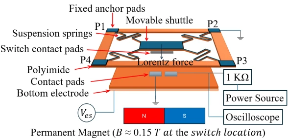
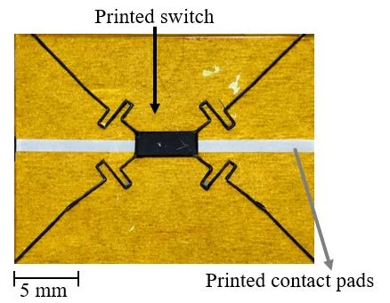
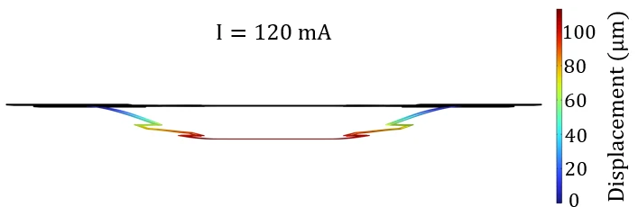
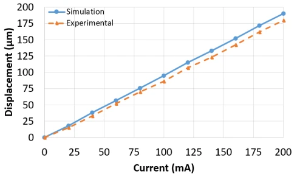
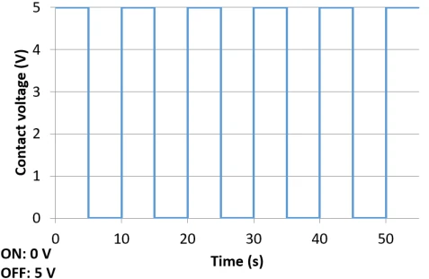
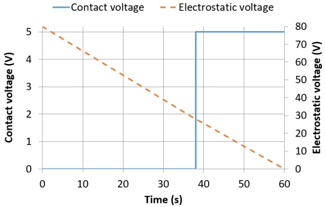

MEMS · Printed electronics · Flexible polyimide · EUROSENSORS 2026 · published
Printed Flexible Lorentz-Force MEMS Switch with Electrostatic Hold-Down
A flexible MEMS switch printed in silver on polyimide. A Lorentz force pulls the shuttle down onto its contacts; a low electrostatic force then holds it closed, so the drive current can be turned off and the switch stays on.
Simulated: 120 mA gives about 110 µm of displacement, enough to close the contact; 33 Hz resonance, 0.018 N/m spring constant. Measured: displacement follows simulation, repeatable switching under a square-wave drive, and the hold-down keeps it closed down to 28 V.

Publication
EUROSENSORS 2026M. Meybodi, K. Nguyen, T. Chen, C. Shafai, “A Low-Power Printed Flexible Lorentz Force MEMS Switch with Electrostatic Hold-down,” EUROSENSORS 2026, pp. 152–153. DOI: 10.5162/eurosensors2026/4.4.3
| Authors | Mohammad Meybodi, Khoi Nguyen, Tao Chen, Cyrus Shafai |
|---|---|
| Affiliation | University of Manitoba, Winnipeg, Canada |
| Venue | EUROSENSORS 2026, Actuators session, paper 4.4.3 (ID 114), pp. 152–153 |
| Keywords | Printed MEMS · flexible electronics · Lorentz force actuation · electrostatic hold-down · low-power switching |
| My role | Designed and fabricated the hybrid MEMS relay on flexible polyimide using Voltera NOVA printed electronics and O2 RIE release |
How it works
PRINCIPLEMEMS switches are small, low-power alternatives to electronic switches. Electrostatic actuation draws little steady-state power but usually needs a high voltage; Lorentz-force actuation runs at low voltage but needs a continuous current to stay closed. This switch uses each for what it does well.
A permanent magnet under the device sets up a static magnetic field (about 0.15 T at the switch). A DC current through the fixed anchor pads P2 and P4 flows in-plane across the shuttle, and the resulting out-of-plane Lorentz force pulls the shuttle down onto the contact pads.
Once the switch is closed, a voltage on the bottom electrode holds the shuttle down electrostatically. The drive current can then be turned off while the contact stays closed, which removes the main power cost of Lorentz actuation.
The test circuit feeds 5 V through a 1 kΩ resistor to the contact pad and an oscilloscope reads the pad voltage: 5 V when the switch is open, 0 V when the shuttle touches down.
Pull down
DC current through P2–P4 in the magnet’s field: the Lorentz force drives the shuttle onto the contact pads.
Hold
Bias the bottom electrode: the electrostatic force keeps the shuttle on the contacts.
Release the drive
Turn the current off; the switch stays closed on the electrostatic hold alone.
Open
Lower the hold-down voltage: the switch releases at 28 V (measured).
Design and fabrication
PRINTED MEMSA four-spring suspension printed in silver on polyimide, then released by etching the polyimide around it.
Structural layer
printed silver15 µm thick, 100 µm line width, printed on a Voltera NOVA with ACI FS0142 silver ink.
Substrate
25 µm polyimideFlexible polyimide film carries the printed switch, the anchor pads and the contact pads.
Release
O2 plasma etchOxygen plasma etches away the polyimide around the springs and shuttle, leaving the printed structure free to move.
Suspension
four springsFour suspension springs tie the movable shuttle to the fixed anchor pads P1–P4.

Fabricated switch, 5 mm scale bar (paper, Fig. 3)

Simulated displacement at 120 mA, COMSOL (paper, Fig. 2)
Results
SIMULATION & MEASUREMENTA multiphysics finite-element model in COMSOL predicts the electromechanical response; the switch closes when the shuttle’s vertical displacement reaches 110 µm, where it meets the bottom electrodes.
| Quantity | Value | Source |
|---|---|---|
| Displacement to close | 110 µm | contact with the bottom electrodes |
| Drive current for closure | 120 mA → about 110 µm | simulation |
| Fundamental resonance | about 33 Hz | simulation |
| Effective spring constant | about 0.018 N/m | simulation |
| Displacement vs current | follows the simulated trend | measurement |
| Switching under square-wave drive | repeatable, 5 V (off) ↔ 0 V (on) | measurement |
| Hold-down release voltage | 28 V | measurement, swept 80 V → 0 in 1 V steps |

Displacement vs current, simulation and experiment (paper, Fig. 4)

Dynamic response: contact voltage under square-wave drive (paper, Fig. 5)

Release: hold-down voltage swept down until the switch opens (paper, Fig. 6)